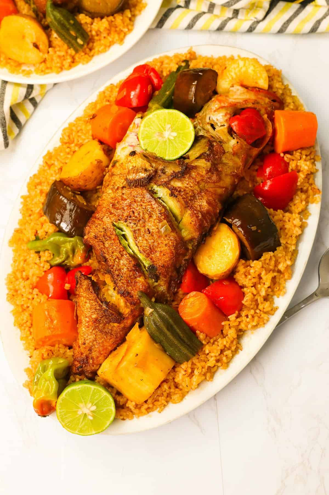
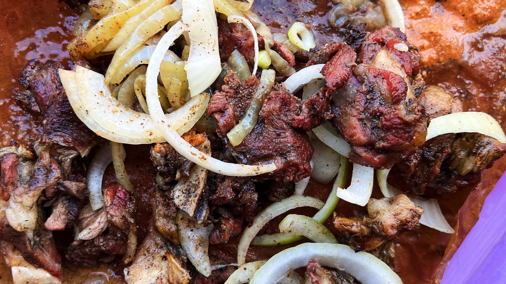
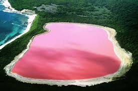
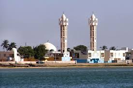
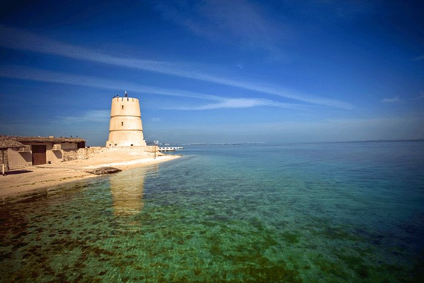
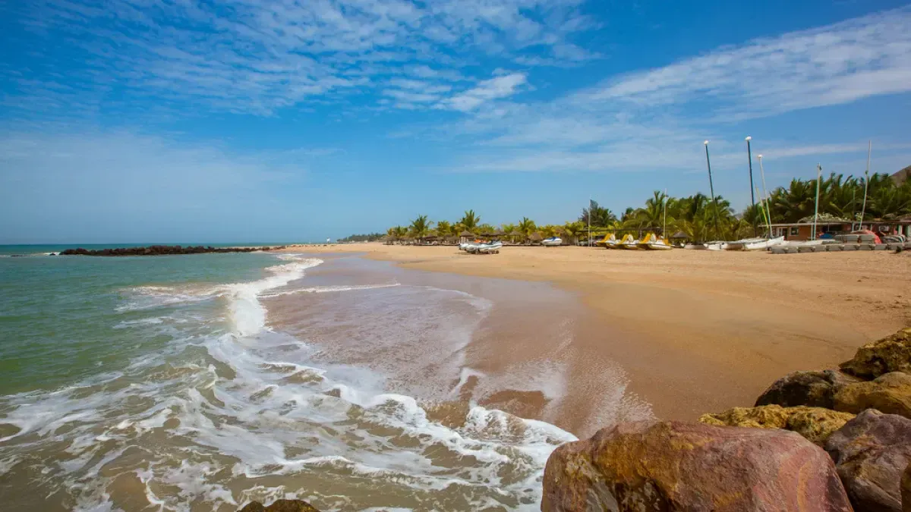
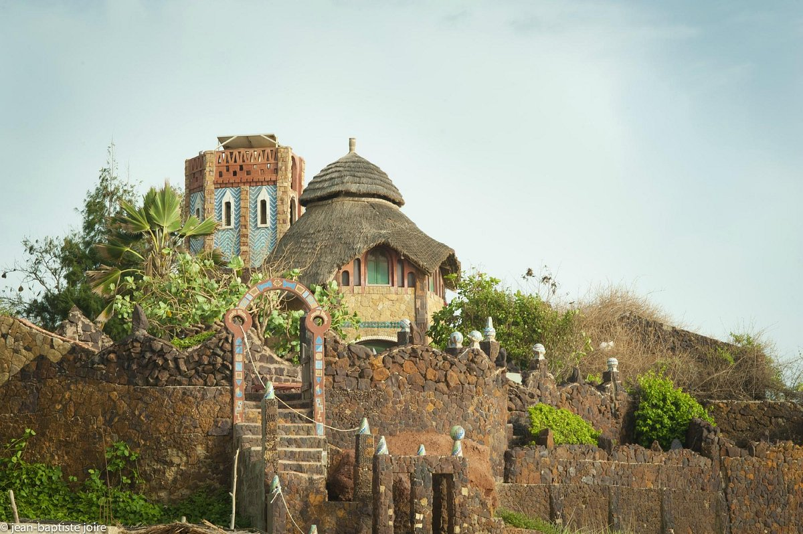
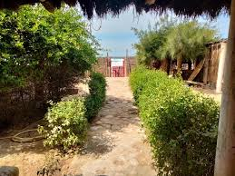
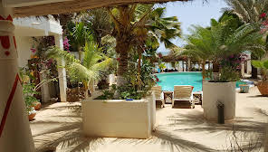
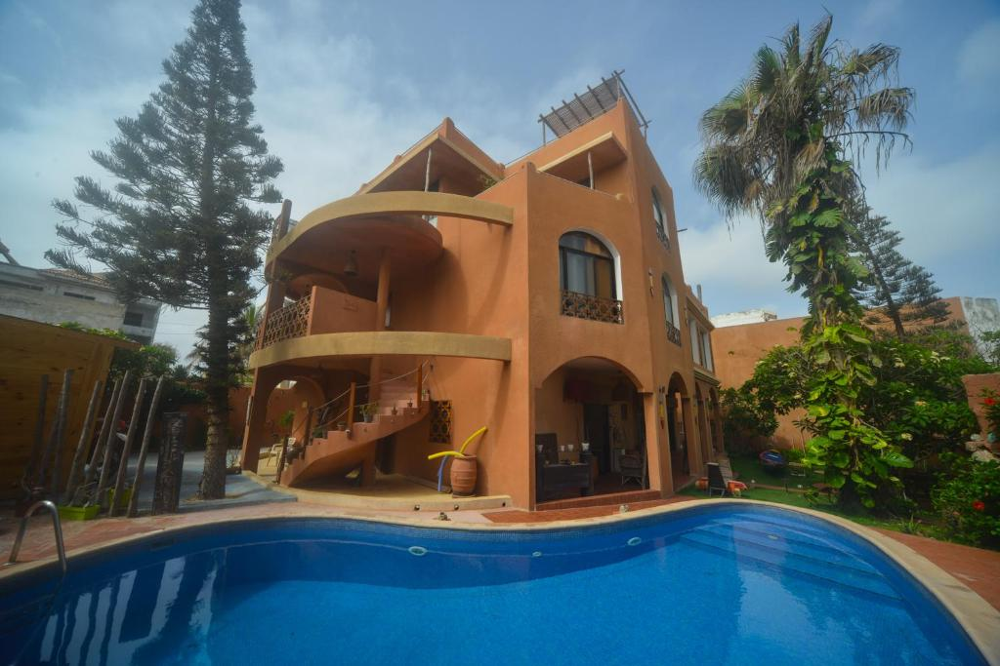

Introduction to Senegal
Welcome to Senegal, Your travel Dream

Culture
The country’s cultural heritage is preserved mostly through oral tradition,
mainly by the oldest men of the community, who are at the summit of Senegal’s hierarchical society.
There are many tribes who stay in Senegal, For example, the Wolof,the Fula, the Serer, and the Jola people.
The country's national language is French, yet there are many people there who can speak muiltitudes of langauges incuding their tribes native langauge and some poeple will have English in their repitorie
Senegalese culture traveled into the world at a fast pace, with severeal international renowned musicians and artist
Such as, Tacko Fall, Macky Sall, and Mariama Bâ.
Traditions
As Senegal has a predominantly muslim population, a lot of their buiness practices rely on the Islamic religion.
They have amazing traditional foods
- Thiéboudieune is the Senegalese national dish.

- It is rice with Fish, dried or fresh, tomatoes, garlic, onions and chilli pasted, all mixed with many vegetables as pumpkin, cassava, eggplant, carrot and peanut oil.
- Dibi or Goat Meat

- Traditionally eaten during Eid-al-Fitr, it is either grilled or oven cooked and served on just a plate or with soem couscous.
Practical Information
It has a dry, tropical climate and a population of 16.7 million, a quarter of whom live in the Dakar region (0.3% of the territory).
Be sure to bring light, breathable clothing and stay hydrated. Respect local customs and tradition!
It has flat and sandy grounds, flat enough for walking.
Common Mode of Transportaiton is Buses
- Single fares on the Dakar Dem Dikk bus network cost XOF150 and the system is fairly dependable.
- Taxis (CarRipde) Travelers can take "car rapides" (minibuses) for around XOF150 per journey, or conventional taxis
Top Destinations
Dakar

Capital & port city with slavery museum
Lake Retba

Pink lake with a high salt content
Saint Louis

N’Dar Island old town & Faidherbe Bridge

Saly
Saly Portudal beaches & deep-sea fishing

Accomodations
Sobo Bade
Route De Toulab, Toubab Dialao 10000, Senegal•+221 33 836 03 56

Gaal-Gui, Chez Guillaume
Chez Guillaume, Beuno Maison Gaal-Gui, Mboro 30005, Senegal•+221 76 515 99 10

Chambres d'hôtes La Somononoise
Village de La Somone, LA SOMONE M'BOUR, Senegal•+221 77 198 30 20

Nyéléni maison sahel
27 Rue YF 109, Dakar 99000, Senegal•+221 77 644 63 07
